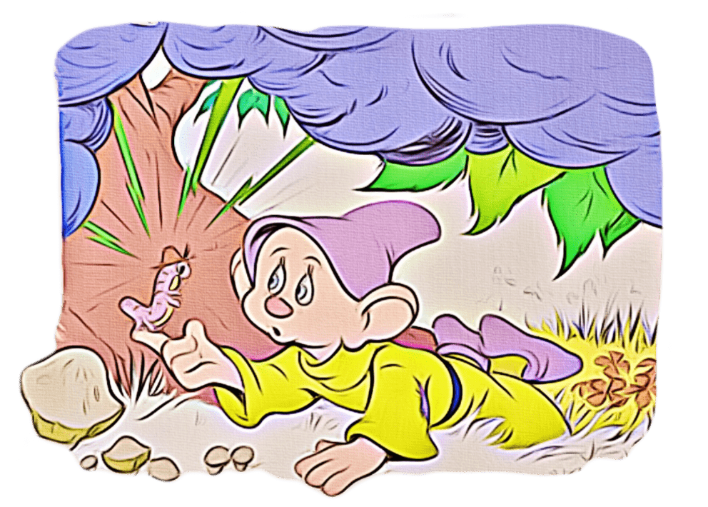

Once, deep in the forest, there was a tiny house.
Inside the house, there lived seven dwarfs and a beautiful princess named Snow White,
The dwarfs, Doc, Grumpy, Sneezy, Bashful, Happy, Sleepy and Dopey, had been very happy since Snow White had come to live with them.
They sang on their way to work in the diamond mine and on their way home,
All the animals of the forest loved them,
Please click on the image above to learn more about the making of Snow White and seven dwarfs movie
One day Dopey and the squirrels were playing tag.
Jumping over the roots of the trees. And Dopey fell.
His nose landed next to a funny looking worm.
Dopey blinked. The worm blinked back.
Dopey picked the worm up with his finger,
Green lightning flashed! Puffs of purple smoke swirled into the air! The smoke covered Dopey.
When the smoke drifted away, Dopey looked around. He wasn't in the forest!
He saw children. And dogs. And cats,

"You're Dopey!" said a voice. Dopey smiled and nodded his head,
"I'm Leona," the voice said.
"How did you get here, Dopey?" asked Leona.
Dopey looked….the worm wasn't on his finger. Something crawled on his ear. It was the worm!,
"Oh! A pink worm! And it's wearing a HAT!" said Leona.
Leona reached out and touched the worm.
Green lightning flashed! Puffs of purple smoke swirled into the air!
The smoke covered Leona and Dopey.